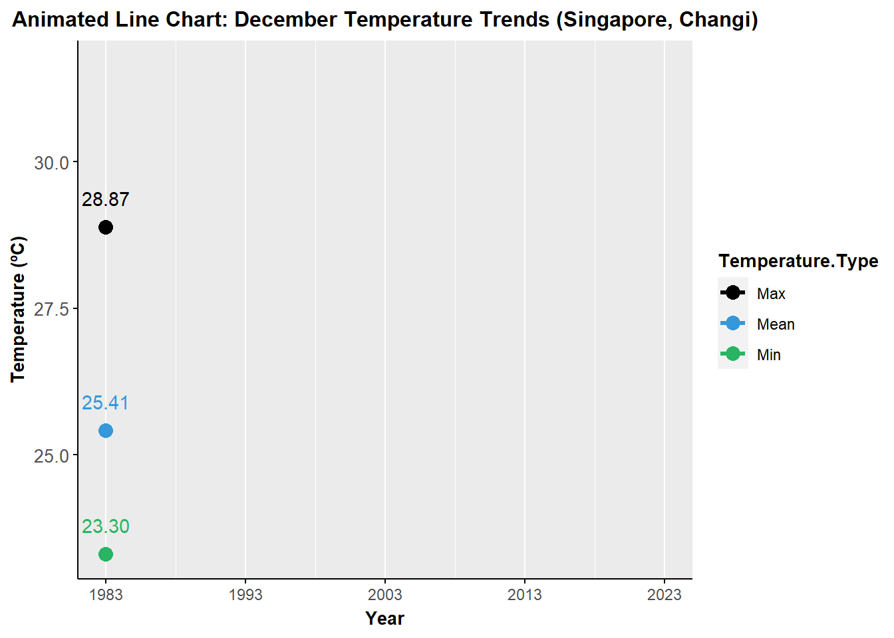
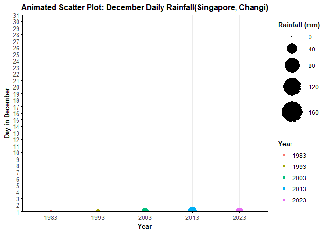

How do you feel living in Singapore ? 
Singapore is located near the equator and falls under a tropical rainforest climate, characterized by high temperatures, high humidity, and abundant rainfall throughout the year. The lack of seasonal variations lull many into thinking that Singapore’s weather is predictable and unchanging. Nothing is further from the truth, with climate change making the city state’s weather even more unpredictable. The global climate change has led to higher temperatures, increased rainfall, and rising sea levels in Singapore.
According to an office report as shown in the info graphic below, by the end of this century,
- Daily mean temperature are projected to increase by 1.4 ºC to 4.6 ºC.
- The contrast between the wet months (November to January) and dry month (February and June to September) is likely to be more pronounced.

Source: Ministry of Sustainability and the Environment
To gain a deeper understanding of the climate change process, I will employ the art of data visualization analysis to illustrate the variations in temperature and rainfall in Singapore over the years.
1. Data Preparation
1.1 Data Source
The data source for this analysis was obtained by the following steps:
- Open the Meteorological Service Singapore website and navigate to the Historical Daily Records page.
- I chose Changi as the location and downloaded historical data for December in the years 1983, 1993, 2003, 2013, and 2023.
- Merge the above five
.csvdata files together to get the “Historical_Records.csv” data file. (The merging process was performed in Excel due to the low volume of data.)
The selection of the data source is based on the requirements of the take-home exercise of ISSS608 Visual Analytics and Applications, which may introduce limitations to the climate change analysis. However, I strive to utilize data visualization techniques as much as possible in the following analysis.
1.2 Data Cleaning
Show the code: Glimpse of Historical_Records.csv
Rows: 155
Columns: 13
$ Station <chr> "Changi", "Changi", "Changi", "Changi", …
$ Year <int> 1983, 1983, 1983, 1983, 1983, 1983, 1983…
$ Month <int> 12, 12, 12, 12, 12, 12, 12, 12, 12, 12, …
$ Day <int> 1, 2, 3, 4, 5, 6, 7, 8, 9, 10, 11, 12, 1…
$ Daily.Rainfall.Total..mm. <dbl> 2.8, 1.7, 5.0, 8.2, 0.0, 0.0, 0.0, 19.8,…
$ Highest.30.Min.Rainfall..mm. <chr> "\u0097", "\u0097", "\u0097", "\u0097", …
$ Highest.60.Min.Rainfall..mm. <chr> "\u0097", "\u0097", "\u0097", "\u0097", …
$ Highest.120.Min.Rainfall..mm. <chr> "\u0097", "\u0097", "\u0097", "\u0097", …
$ Mean.Temperature...C. <dbl> 26.4, 24.3, 25.1, 25.2, 26.0, 25.0, 25.6…
$ Maximum.Temperature...C. <dbl> 31.0, 27.2, 30.2, 30.3, 29.8, 27.7, 28.8…
$ Minimum.Temperature...C. <dbl> 23.8, 21.9, 23.2, 23.0, 23.0, 23.7, 23.4…
$ Mean.Wind.Speed..km.h. <dbl> 9.1, 4.9, 3.1, 3.2, 4.5, 4.4, 4.9, 5.4, …
$ Max.Wind.Speed..km.h. <dbl> 46.1, 36.4, 41.0, 31.7, 28.8, 32.4, 32.8…Then, the Historical_Records.csv was processed as follows:
- Since all data originated from Changi station and December, columns “Station” and “Month” were removed.
- Columns “Highest 30 Min Rainfall (mm)”, “Highest 60 Min Rainfall (mm)”, and “Highest 60 Min Rainfall (mm)” contained data only for December 2023, with insufficient data for comparison; hence, these three columns were deleted.
- Change the format of column names. For example, replace “Daily.Rainfall.Total..mm.” with “Daily_Rainfall_Total”.
- The following analysis is solely focused on temperature and rainfall; therefore, the column “Mean Wind Speed” and “Max Wind Speed” are also excluded.
Show the code: Glimpse of the cleaned data (Historical_Records2)
# Select columns to keep
Historical_Records2 <- select(Historical_Records, Year, Day, Daily.Rainfall.Total..mm., Mean.Temperature...C., Maximum.Temperature...C., Minimum.Temperature...C.)
# Replace column names
colnames(Historical_Records2) <- gsub("Daily.Rainfall.Total..mm.", "Daily_Rainfall_Total", colnames(Historical_Records2))
colnames(Historical_Records2) <- gsub("Mean.Temperature...C.", "Mean_Temperature", colnames(Historical_Records2))
colnames(Historical_Records2) <- gsub("Maximum.Temperature...C.", "Maximum_Temperature", colnames(Historical_Records2))
colnames(Historical_Records2) <- gsub("Minimum.Temperature...C.", "Minimum_Temperature", colnames(Historical_Records2))
# View the structure of Historical_Records2
glimpse(Historical_Records2)Rows: 155
Columns: 6
$ Year <int> 1983, 1983, 1983, 1983, 1983, 1983, 1983, 1983, 1…
$ Day <int> 1, 2, 3, 4, 5, 6, 7, 8, 9, 10, 11, 12, 13, 14, 15…
$ Daily_Rainfall_Total <dbl> 2.8, 1.7, 5.0, 8.2, 0.0, 0.0, 0.0, 19.8, 48.1, 21…
$ Mean_Temperature <dbl> 26.4, 24.3, 25.1, 25.2, 26.0, 25.0, 25.6, 24.9, 2…
$ Maximum_Temperature <dbl> 31.0, 27.2, 30.2, 30.3, 29.8, 27.7, 28.8, 28.7, 2…
$ Minimum_Temperature <dbl> 23.8, 21.9, 23.2, 23.0, 23.0, 23.7, 23.4, 23.0, 2…To begin with, let’s take a quick look at the approximate climate changes. The following interactive area-line chart shows the trends in December average temperature and total rainfall in the years 1983, 1993, 2003, 2013, and 2023 recorded by the Singapore Changi station.
Show the code: December Average Temperature and Total Rainfall Trend (Singapore, Changi)
# Calculate the average temperature and rainfall for each December
december_data <- Historical_Records2 %>%
group_by(Year) %>%
summarise(
Dec_Avg_Temperature = mean(Mean_Temperature),
Dec_Rainfall_Total = sum(Daily_Rainfall_Total)
)
# Change the data type of "Year" from INT to CHR
december_data$Year <- as.character(december_data$Year)
#create interactive chart for the average temperature and rainfall for each December
highchart() %>%
hc_title(text = "<b>Area-line Chart: December Average Temperature and Total Rainfall Trend (Singapore, Changi)</b>", style = list(fontSize = '1.5em')) %>%
hc_xAxis(categories = december_data$Year) %>%
hc_add_series(data = december_data, type = "area", hcaes(x = Year, y = Dec_Rainfall_Total), name = "<b>Dec. Rainfall Total (mm)</b>", color = "#3498DB", yAxis = 1) %>%
hc_add_series(data = december_data, type = "line", hcaes(x = Year, y = Dec_Avg_Temperature), name = "<b>Dec. Avg. Temp. (ºC)</b>", color = "#E74C3C", marker = list(enabled = TRUE), lineWidth = 4) %>%
hc_yAxis_multiples(
list(title = list(text = "<b>Dec. Avg. Temp. (ºC)</b>"), opposite = FALSE, style = list(fontWeight = "bold", fontSize = "16px")),
list(title = list(text = "<b>Dec. Rainfall Total (mm)</b>"), opposite = TRUE, style = list(fontWeight = "bold", fontSize = "16px"))) %>%
hc_tooltip(useHTML = TRUE,shared = TRUE, crosshairs = TRUE, valueDecimals = 2) %>%
hc_legend(itemStyle = list(fontWeight = "bold", fontSize = "12px"))%>%
hc_chart(
borderColor = '#757575',
borderRadius = 10,
borderWidth = 2,
backgroundColor = list(
linearGradient = c(0, 0, 500, 500),
stops = list(
list(0, 'rgb(250, 250, 250)'),
list(1, 'rgb(189, 189, 189)')
)
)
)Observation from the area-line chart:
From this chart, we can clearly see a significant rise in temperatures in the Changi region of Singapore compared to 1983, but there is no clear pattern in rainfall.
In the following section, I will showcase more visualized data regarding temperature and rainfall.
2. Temperature
2.1 Monthly Average Temperature
Firstly, let’s observe the trends in the average of daily mean, maximum, and minimum temperatures recorded in December through the animated charts below.
Show the code: Animated Line Chart: December Temperature Trends (Singapore, Changi)
# Calculate the average temperature for each December
december_data_temp <- Historical_Records2 %>%
group_by(Year) %>%
summarise(Mean = mean(Mean_Temperature),
Max = mean(Maximum_Temperature),
Min = mean(Minimum_Temperature))
december_data_temp <- december_data_temp %>%
pivot_longer(cols = starts_with("M"),
names_to = "Temperature.Type",
values_to = "Temperature")
# create animated chart for the december temp trend
ggplot(december_data_temp, aes(x = Year, y = Temperature, color = Temperature.Type, group = Temperature.Type)) +
geom_line(linewidth=1.2) +
geom_point(size = 3.5) +
geom_text(aes(label = sprintf("%.2f", Temperature)), nudge_y = 0.5, show.legend = FALSE) +
scale_x_continuous(breaks = unique(december_data_temp$Year)) +
labs(x = "Year", y = "Temperature (ºC)") +
ggtitle("Animated Line Chart: December Temperature Trends (Singapore, Changi)") +
theme_grey() +
shadow_mark() +
theme(
panel.grid.major.y = element_blank(),
panel.grid.minor.y = element_blank(),
plot.title = element_text(face = "bold", size = 12, hjust = 0.5),
axis.title = element_text(face = "bold", size = 10),
legend.title = element_text(face = "bold", size = 10),
axis.text.y = element_text(size = 10), # Adjust Y axis text size
axis.ticks.y = element_line(color = "black"), # Adjust Y axis ticks
axis.line.y = element_line(color = "black"), # Adjust Y axis line color
axis.ticks.x = element_line(color = "black"),
axis.line.x = element_line(color = "black")
) +
scale_color_manual(values = c("Max" = "black", "Min" = "#28B463", "Mean" = "#3498DB")) +
transition_reveal(Year)
Let’s explore more detailed data from the interactive chart below.
Show the code: Area-line Chart: December Temperature Trends (Singapore, Changi)
averages <- december_data_temp %>%
filter(Temperature.Type == "Mean") %>%
select(Year, Temperature)
max_temps <- december_data_temp %>%
filter(Temperature.Type == "Max") %>%
select(Year, Temperature)
min_temps <- december_data_temp %>%
filter(Temperature.Type == "Min") %>%
select(Year, Temperature)
ranges <- data.frame(
Year = max_temps$Year,
Min_Temperature = min_temps$Temperature,
Max_Temperature = max_temps$Temperature
)
highchart() %>%
hc_title(text = "Area-line Chart: December Temperature Trends (Singapore, Changi)", style = list(fontSize = '1.5em')) %>%
hc_xAxis(categories = unique(ranges$Year), title = list(text = "Year")) %>%
hc_yAxis(title = list(text = "Temperature (ºC)")) %>%
hc_tooltip(useHTML = TRUE,crosshairs = TRUE, shared = TRUE, valueSuffix = "ºC", valueDecimals = 2) %>%
hc_legend(itemStyle = list(fontWeight = "bold", fontSize = "12px"))%>%
hc_series(
list(name = "Mean", data = averages$Temperature, zIndex = 1,
marker = list(fillColor = "white", lineWidth = 1, lineColor = "red" )),
list(name = "Max", data = ranges$Max_Temperature, zIndex = 1,
marker = list(fillColor = "white", lineWidth = 1, lineColor = "#2E86C1")),
list(name = "Min", data = ranges$Min_Temperature, zIndex = 1,
marker = list(fillColor = "white", lineWidth = 1, lineColor = "green")),
list(name = "Temperature Range",
data = cbind(ranges$Min_Temperature, ranges$Max_Temperature),
type = "arearange", lineWidth = 0, linkedTo = ":previous",
color = "#FDEBD0", fillOpacity = 0.3, zIndex = 0,
marker = list(enabled = FALSE))
)%>%
hc_chart(
borderColor = '#757575',
borderRadius = 10,
borderWidth = 2,
backgroundColor = list(
linearGradient = c(0, 0, 500, 500),
stops = list(
list(0, 'rgb(250, 250, 250)'),
list(1, 'rgb(189, 189, 189)')
)
)
)Observation from the temperature trends charts:
There appears to be no significant variation in values from 1993 to 2013, as indicated by the nearly horizontal line during this period in the charts. However, when considering a longer time span, there is a notable increase in temperature values from 1983 to 2023. The temperature value in 2023 is significantly higher than that in 1983.
Roughly speaking, the average temperature increased by 1ºC from 1983 to 1993, remained relatively stable from 1993 to 2013, and then rose by another 1 ºC from 2013 to 2023.
Then, let’s take a look at the volatility of the data. The error bar chart below illustrates the fluctuations in temperature values
Show the code: Error-bar Chart: December Temperature (Singapore, Changi)
# Calculate sd
sd_max <- tapply(Historical_Records2$Maximum_Temperature, Historical_Records2$Year, sd)
sd_mean <- tapply(Historical_Records2$Mean_Temperature, Historical_Records2$Year, sd)
sd_min <- tapply(Historical_Records2$Minimum_Temperature, Historical_Records2$Year, sd)
sd_data <- bind_rows(
data.frame(Year = names(sd_max), sd_type = "sd_max", sd_value = sd_max),
data.frame(Year = names(sd_mean), sd_type = "sd_mean", sd_value = sd_mean),
data.frame(Year = names(sd_min), sd_type = "sd_min", sd_value = sd_min)
)
sd_data <- sd_data %>%
mutate(sd_type = factor(sd_type, levels = c("sd_mean", "sd_max", "sd_min"))) %>%
arrange(Year, sd_type)%>%
select(-Year)
december_temp_sd_data <- cbind(december_data_temp, sd_data)
december_temp_sd_data$Year <- as.character(december_temp_sd_data$Year)
# create error-bar chart
hchart(december_temp_sd_data, "column", hcaes(x = Year, y = Temperature, group = Temperature.Type), id = c("a", "b", "c")) %>%
hc_title(text = "Error-bar Chart: December Temperature (Singapore, Changi)", style = list(fontSize = '1.5em')) %>%
hc_xAxis(categories = unique(december_temp_sd_data$Year), title = list(text = "Year")) %>%
hc_yAxis(min = 20, max = 35, title = list(text = "Temperature (ºC)")) %>%
hc_tooltip(useHTML = TRUE,crosshairs = TRUE,valueSuffix = "ºC", valueDecimals = 2) %>%
hc_legend(itemStyle = list(fontWeight = "bold", fontSize = "12px"))%>%
hc_add_series(
december_temp_sd_data,
"errorbar",
hcaes(y = Temperature, x = Year, low = Temperature - sd_value, high = Temperature + sd_value, group = Temperature.Type),
linkedTo = c("a", "b", "c"),
enableMouseTracking = TRUE,
showInLegend = FALSE
)%>%
hc_chart(
borderColor = '#757575',
borderRadius = 10,
borderWidth = 2,
backgroundColor = list(
linearGradient = c(0, 0, 500, 500),
stops = list(
list(0, 'rgb(250, 250, 250)'),
list(1, 'rgb(189, 189, 189)')
)
)
)Observation from the error-bar chart:
The error bars for the maximum temperature are longest, while those for the mean and minimum temperatures are relatively short and similar. This indicates that the variability in maximum temperature is more pronounced, whereas the fluctuations in mean and minimum temperatures are comparatively smaller.
2.2 Daily Mean Temperature
Now, let’s explore the changes in mean temperature for each day in December. Let’s start by taking a look at the following polar-line chart.
Show the code: Polar-line Chart: December Daily Mean Temperature Comparison (Singapore, Changi)
Historical_Records2$Year <- as.character(Historical_Records2$Year)
# create Polar-line chart
highchart() %>%
hc_chart(polar = TRUE) %>%
hc_title(text = "Polar-line Chart: December Daily Mean Temperature Comparison (Singapore, Changi)",
style = list(fontSize = '1.5em')) %>%
hc_xAxis(categories = 0:31) %>%
hc_yAxis(labels = list(format = "{value} °C")) %>%
hc_tooltip(useHTML = TRUE,crosshairs = TRUE, valueDecimals = 2) %>%
hc_add_series(data = subset(Historical_Records2, Year %in% c("1983", "1993", "2003", "2013", "2023")),
type = "line", hcaes(x = Day, y = Mean_Temperature, group = Year),
tooltip = list(pointFormat = "Dec {point.x}, Temperature: {point.y} ºC"),
zIndex = 1) %>%
hc_chart(borderColor = '#757575',
borderRadius = 10,
borderWidth = 2,
backgroundColor = list(
linearGradient = c(0, 0, 500, 500),
stops = list(
list(0, 'rgb(250, 250, 250)'),
list(1, 'rgb(189, 189, 189)')
)))Observation from the polar-line chart:
From a rough glance, the polar-line for 2023 is on the outermost circle, while the polar-line for 1983 is on the innermost circle. This implies that for most days in December 2023, the average temperature is higher compared to the same days in 1983. This further confirms the conclusion drawn earlier regarding the rise in temperatures.
Show the code: Heatmap: December Daily Mean Temperture (Singapore, Changi)
hchart(Historical_Records2, type = "heatmap", hcaes(x = Day, y = Year, value = Mean_Temperature)) %>%
hc_xAxis(categories = 0:31, title = list(text = "Day in December")) %>%
hc_yAxis(categories = unique(Historical_Records2$Year), title = list(text = "Year")) %>%
hc_legend(enabled = TRUE) %>%
hc_colorAxis(stops = color_stops(n = 10, colors = rev(hcl.colors(n = 10, palette = "RdYlBu")))) %>%
hc_legend(align = 'right',
layout = 'vertical',
margin = 20,
verticalAlign = 'top',
y = 20,
reversed = TRUE,
symbolHeight = 200) %>%
hc_tooltip(useHTML = TRUE, pointFormat = "<br/>Dec {point.x}, Temperature: {point.value} ºC",valueDecimals = 2) %>%
hc_title(text = 'Heatmap: December Daily Mean Temperture (Singapore, Changi)', style = list(fontSize = '1.5em')) %>%
hc_responsive(rules = list(list(condition = list(maxWidth = 500),
chartOptions = list(yAxis =
list(labels =
list(format = '{substr value 0 1}'))))))Observation from the heatmap:
From bottom (1983) to top (2023), the number of blue-green blocks decreases noticeably, indicating that hot days in December were increasing. The deep orange-red blocks are significantly more prevalent in 2023 than in other years, suggesting a clear trend of rising temperatures throughout December.
Conclusion
From the visualization above, we can infer that the data observed in the Singapore Changi region from 1983 to 2023 indicate a clear upward trend in temperature. Comparing 2023 to 40 years ago, there has been a significant increase of 2°C. Such a difference is notable both in terms of human perception and its impact on the environment. See: Impact Of Climate Change In Singapore

Next, let’s take a look at the rainfall.
3. Rainfall
3.1 December Total Rainfall
Show the code: Bar Chart: December Total Rainfall (Singapore, Changi)
highchart() %>%
hc_chart(type = "column") %>%
hc_xAxis(categories = december_data$Year, title = list(text = "Year")) %>%
hc_yAxis(title = list(text = "Rainfall (mm)")) %>%
hc_title(text = "Bar Chart: December Total Rainfall (Singapore, Changi)",
style = list(fontSize = '1.5em')) %>%
hc_add_series(december_data, "column", hcaes(x = Year, y = Dec_Rainfall_Total, color = Dec_Rainfall_Total)) %>%
hc_add_series(december_data, "line", hcaes(x = Year, y = Dec_Rainfall_Total, color = Dec_Rainfall_Total), yAxis = 0) %>%
hc_tooltip(useHTML = TRUE, pointFormat = "<b>Total rainfall: {point.y} mm<b>",valueDecimals = 2) %>%
hc_colorAxis(minColor = "#EBF5FB", maxColor = "#2E86C1", stops = color_stops(n = 10)) %>%
hc_chart(borderColor = '#757575',
borderRadius = 10,
borderWidth = 2,
backgroundColor = list(
linearGradient = c(0, 0, 500, 500),
stops = list(
list(0, 'rgb(250, 250, 250)'),
list(1, 'rgb(189, 189, 189)')
))) %>%
hc_plotOptions(column = list(dataLabels = list(enabled = TRUE)),
line = list(marker = list(enabled = TRUE)))Observation from the bar chart:
The chart above doesn’t show a clear trend. The total rainfall fluctuates between high and low for these five years, but what we can see is that the total rainfall in December 2023 is the lowest compared to the other years.
3.2 December Daily Rainfall
First, let’s take a look at which days in December were raining through an interesting animated plot. You can also explore the detailed data of daily rainfall through the corresponding interactive graph.
Show the code: Animated Scatter Plot: December Daily Rainfall(Singapore, Changi)
# Convert Year to factor to avoid treating it as a continuous variable
#Historical_Records2$Year <- as.factor(Historical_Records2$Year)
# Create ggplot object
p <- ggplot(Historical_Records2, aes(Year, Day, size = Daily_Rainfall_Total, color = Year, group = interaction(Year, Day))) +
geom_point() +
scale_x_discrete() +
scale_size(range = c(0,15))+
theme_bw() +
labs(title = 'Animated Scatter Plot: December Daily Rainfall(Singapore, Changi)',
x = 'Year',
y = 'Day in December',
size = "Rainfall (mm)") + # Modify labels accordingly
transition_states(Day, transition_length = 2, state_length = 1) +
shadow_mark() +
theme(
panel.grid.major.y = element_blank(),
panel.grid.minor.y = element_blank(),
plot.title = element_text(face = "bold", size = 12, hjust = 0.5),
axis.title = element_text(face = "bold", size = 10),
legend.title = element_text(face = "bold", size = 10),
axis.text.y = element_text(size = 10), # Adjust Y axis text size
axis.ticks.y = element_line(color = "black"), # Adjust Y axis ticks
axis.line.y = element_line(color = "black"), # Adjust Y axis line color
axis.ticks.x = element_line(color = "black"),
axis.line.x = element_line(color = "black")
) +
scale_y_continuous(breaks = 1:31, expand = c(0, 0))
animate(p)
Show the code: Interactive Scatter Plot: December Daily Rainfall (Singapore, Changi)
# Create ggplot
p <- ggplot(Historical_Records2, aes(Year, Day, color = Year)) +
geom_point(aes(size = Daily_Rainfall_Total)) +
scale_x_discrete() +
scale_size(range = c(0,15))+
theme_bw() +
labs(title = 'Interactive Scatter Plot: December Daily Rainfall (Singapore, Changi)',
x = 'Year',
y = 'Day in Dec.') +
transition_states(Day, transition_length = 2, state_length = 1) +
shadow_mark() +
theme(
panel.grid.major.y = element_blank(),
panel.grid.minor.y = element_blank(),
plot.title = element_text(face = "bold",size = 10, hjust = 0.5),
axis.title = element_text(face = "bold",size = 8),
legend.title = element_text(face = "bold",size = 8),
axis.text.y = element_text(size = 10),
axis.ticks.y = element_line(color = "black"),
axis.line.y = element_line(color = "black"),
axis.ticks.x = element_line(color = "black"),
axis.line.x = element_line(color = "black")
) +
scale_y_continuous(breaks = 1:31, expand = c(0, 0))
ggplotly(p, tooltip = c("Day", "Daily_Rainfall_Total")) %>%
layout(
#autosize = TRUE,width = 600,height = 800,
showlegend = TRUE,
legend = list(
title = list(text = "Year"),
itemsizing = "constant",
itemwidth = 50
))Observation from the scatter plot:
While there isn’t a clear trend in the data for December in 1993, 2003, and 2013, it’s evident that December 2023 had more rainy days compared to December 1983. This is visually represented on the graph by more data points for 2023 than for 1983.
Next, let’s dig into it. Take a look at the area chart below.
Show the code: Area Chart: December Daily Rainfall (Singapore, Changi)
highchart() %>%
hc_add_series(data = subset(Historical_Records2, Year %in% c("1983", "1993", "2003", "2013", "2023")),
type = "area", hcaes(x = Day, y = Daily_Rainfall_Total, group = Year),
zIndex = 1) %>%
hc_title(text="Area Chart: December Daily Rainfall (Singapore, Changi)", style = list(fontSize = '1.5em'))%>%
hc_xAxis(categories = 0:31, title = list(text = "Day in December")) %>%
hc_yAxis(title = list(text = "Rainfall (mm)")) %>%
hc_tooltip(
useHTML = TRUE,crosshairs = TRUE,valueDecimals = 2,
pointFormat = "<br/>Dec {point.x}, Rainfall: {point.y} mm"
)%>%
hc_chart(
borderColor = '#757575',
borderRadius = 10,
borderWidth = 2,
backgroundColor = list(
linearGradient = c(0, 0, 500, 500),
stops = list(
list(0, 'rgb(250, 250, 250)'),
list(1, 'rgb(189, 189, 189)')
)))Observation from the area chart:
While there’s no obvious trend, it seems like 2023 had less rainfall compared to other years(with the smallest area). Also, the biggest rain days in December for other years had much more rain than the biggest day in 2023. One standout is the heavy rainfall on December 25th, 1983.
Show the code: Polar-scatter Chart: December Daily Rainfall Comparison (Singapore, Changi)
# Extract rainfall data for each year
rainfall_1983 <- subset(Historical_Records2, Year == 1983)
rainfall_1993 <- subset(Historical_Records2, Year == 1993)
rainfall_2003 <- subset(Historical_Records2, Year == 2003)
rainfall_2013 <- subset(Historical_Records2, Year == 2013)
rainfall_2023 <- subset(Historical_Records2, Year == 2023)
highchart() %>%
hc_chart(
type = "scatter",
polar = TRUE,
borderColor = '#757575',
borderRadius = 10,
borderWidth = 2,
backgroundColor = list(
linearGradient = c(0, 0, 500, 500),
stops = list(
list(0, 'rgb(250, 250, 250)'),
list(1, 'rgb(189, 189, 189)')
)
)
) %>%
hc_title(text = "Polar-scatter Chart: December Daily Rainfall Comparison (Singapore, Changi)") %>%
hc_xAxis(
categories = 0:31,
labels = list(format = "{value}") # Set x-axis labels format
) %>%
hc_yAxis(
labels = list(
format = "{value} mm",
style = list(
color = "#333333" # Set y-axis labels color
)
),
tickPositions = c(0, 25, 50, 100, 150, 200) # Set y-axis tick positions
) %>%
hc_add_series(
data = data.frame(x = rainfall_1983$Day, y = rainfall_1983$Daily_Rainfall_Total, size = rainfall_1983$Daily_Rainfall_Total),
name = "1983",
color = "rgba(255, 165, 0, 0.5)", # Set transparency
marker = list(symbol = "circle"),
tooltip = list(pointFormat = "<b>Dec {point.x}<b>: {point.y} mm")
) %>%
hc_add_series(
data = data.frame(x = rainfall_1993$Day, y = rainfall_1993$Daily_Rainfall_Total, size = rainfall_1993$Daily_Rainfall_Total),
name = "1993",
color = "rgba(0, 128, 0, 0.5)", # Set transparency
marker = list(symbol = "circle"),
tooltip = list(pointFormat = "<b>Dec {point.x}<b>: {point.y} mm")
) %>%
hc_add_series(
data = data.frame(x = rainfall_2003$Day, y = rainfall_2003$Daily_Rainfall_Total, size = rainfall_2003$Daily_Rainfall_Total),
name = "2003",
color = "rgba(0, 0, 255, 0.5)", # Set transparency
marker = list(symbol = "circle"),
tooltip = list(pointFormat = "<b>Dec {point.x}<b>: {point.y} mm")
) %>%
hc_add_series(
data = data.frame(x = rainfall_2013$Day, y = rainfall_2013$Daily_Rainfall_Total, size = rainfall_2013$Daily_Rainfall_Total),
name = "2013",
color = "rgba(255, 0, 0, 0.5)", # Set transparency
marker = list(symbol = "circle"),
tooltip = list(pointFormat = "<b>Dec {point.x}<b>: {point.y} mm")
) %>%
hc_add_series(
data = data.frame(x = rainfall_2023$Day, y = rainfall_2023$Daily_Rainfall_Total, size = rainfall_2023$Daily_Rainfall_Total),
name = "2023",
color = "rgba(255, 255, 0, 0.5)", # Set transparency
marker = list(symbol = "circle"),
tooltip = list(pointFormat = "<b>Dec {point.x}<b>: {point.y} mm")
)Observation from the above polar-scatter chart:
In December, most days see rainfall below 50mm, with the majority experiencing less than 25mm. However, there are a few days of heavy rain, with some exceeding 100mm and even 150mm.
Moving forward, let’s examine the daily rainfall and total rainfall for December together.
Show the code: Scatter-Bar Chart: December Daily Rainfall and Total Rainfall (Singapore, Changi)
# Set marker size based on the size of Daily_Rainfall_Total
max_rainfall <- max(Historical_Records2$Daily_Rainfall_Total)
min_rainfall <- min(Historical_Records2$Daily_Rainfall_Total)
# Calculate the range of marker sizes
size_range <- c(1, 40)
# Calculate normalized values for Daily_Rainfall_Total in [0, 1]
normalized_rainfall <- (Historical_Records2$Daily_Rainfall_Total - min_rainfall) / (max_rainfall - min_rainfall)
# Calculate marker size based on normalized values
marker_size <- size_range[1] + normalized_rainfall * (size_range[2] - size_range[1])
# Create an interactive scatter plot
fig1 <- plot_ly(Historical_Records2, x = ~Year, y = ~Daily_Rainfall_Total,
marker = list(size = marker_size,
color = ~Daily_Rainfall_Total,
colorscale = "Blues",
cmin = min_rainfall,
cmax = max_rainfall,
reversescale = TRUE, # Make the color gradient from light to dark
showscale = TRUE,
colorbar = list(title = "Rainfall (mm)", len = 0.5, thickness = 20)),
hoverinfo = "text",
text = ~paste("Date: Dec ", Day, "<br>Year:", Year, "<br>Daily Rainfall Total:", Daily_Rainfall_Total, "mm"),
type = 'scatter',
mode = 'markers',
name = "Daily Rainfall")%>%
layout(yaxis = list(autorange = "reversed", showgrid = FALSE))
# Create a subplot with a dataframe beside the scatter plot
fig2 <- plot_ly(data = december_data, x = ~Year, y = ~Dec_Rainfall_Total, type = 'bar', name = "Total Rainfall",marker = list(color = "#2E86C1"))%>%
layout(yaxis = list(autorange = "reversed", showgrid = FALSE))
# Combine the plots into one subplot
subplot(fig1, fig2, nrows = 1, shareX = TRUE, shareY = FALSE, titleX = FALSE)%>%
layout(title = "Scatter-Bar Chart: December Daily Rainfall and Total Rainfall (Singapore, Changi)")Show the code: Packedbubble Chart: December Daily Rainfall and Total Rainfall (Singapore, Changi)
q95 <- as.numeric(quantile(Historical_Records2$Daily_Rainfall_Total, .95))
hchart(Historical_Records2, "packedbubble", hcaes(name = Day, value = Daily_Rainfall_Total, group = Year))%>%
hc_tooltip(
useHTML = TRUE,
pointFormat = "<b>Dec {point.name}:</b> {point.value} mm"
) %>%
hc_title(text = 'Packedbubble Chart: December Daily Rainfall and Total Rainfall (Singapore, Changi)',
style = list(fontSize = '1.5em')) %>%
hc_chart(
borderColor = '#757575',
borderRadius = 10,
borderWidth = 2,
backgroundColor = list(
linearGradient = c(0, 0, 500, 500),
stops = list(
list(0, 'rgb(250, 250, 250)'),
list(1, 'rgb(189, 189, 189)')
)
)
)%>%
hc_plotOptions(
packedbubble = list(
maxSize = "150%",
zMin = 0,
layoutAlgorithm = list(
gravitationalConstant = 0.05,
splitSeries = TRUE, # TRUE to group points
seriesInteraction = TRUE,
dragBetweenSeries = TRUE,
parentNodeLimit = TRUE
),
dataLabels = list(
enabled = TRUE,
format = "{point.value}mm",
filter = list(
property = "y",
operator = ">",
value = q95
),
style = list(
color = "black",
textOutline = "none",
fontWeight = "normal"
))))Observation from the above two charts:
The total rainfall and maximum daily rainfall in December 1983 were the highest, while in the rest years, they were lower. Conversely, in December 2023, both the total rainfall and maximum daily rainfall were the lowest. The maximum daily rainfall in December 1983 was nearly three times as much as that in December 2023.
Conclusion
Based on the data set, we cannot discern a pattern in the total rainfall amount. However, it is evident that compared to 40 years ago, there has been a significant increase in the number of rainy days in December 2023, confirming that the frequency of rainfall events is increasing.

Reference
ggnimate: How to Create Plots with Beautiful Animation in R
Visualising Singapore’s Changing Weather Patterns: 1983–2019
Highchart Interactive Bar Plot in R
Using gganimate with geom_point and geom_line